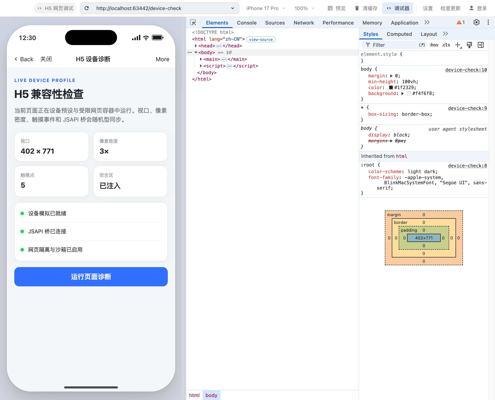
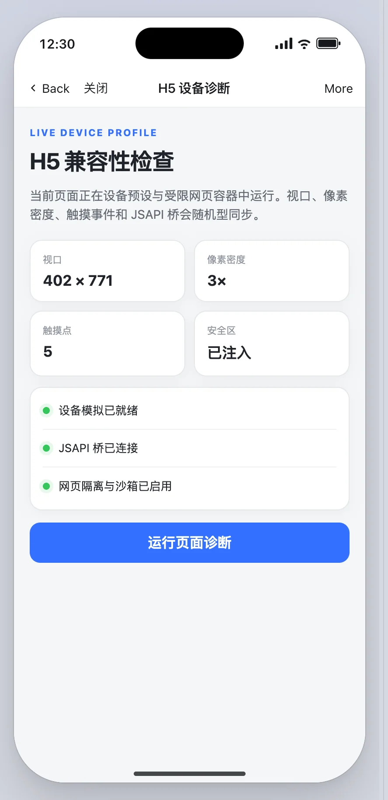
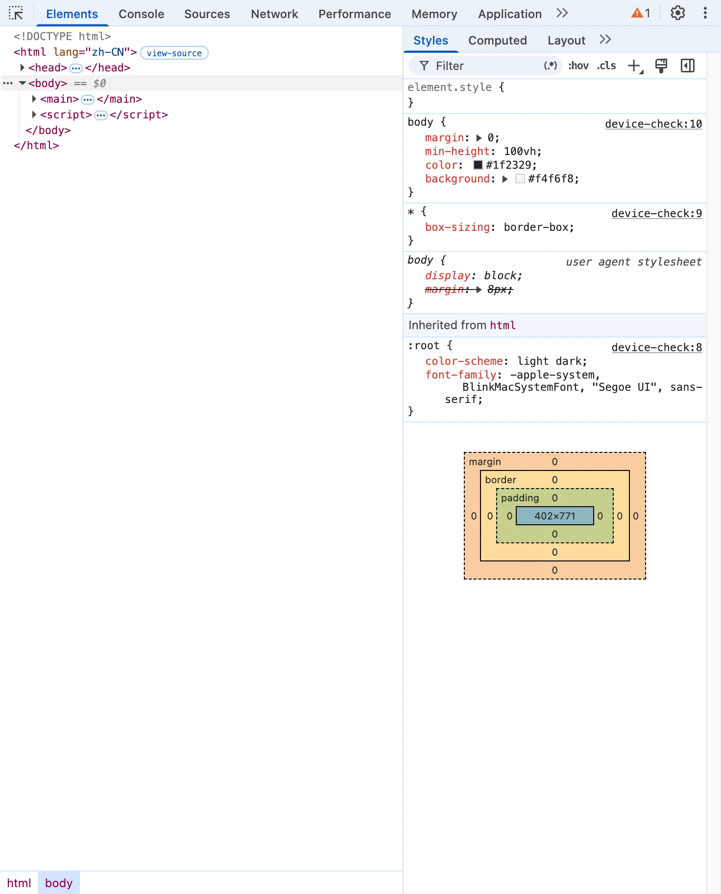

macOS
macOS 13 Ventura 或更新 · 包内 App 为 ad-hoc 签名 · 未公证

DOWNLOADS
Larto 0.1.3 · 所有公开包均提供 SHA-256 校验
macOS 13 Ventura 或更新 · 包内 App 为 ad-hoc 签名 · 未公证
Windows 10/11 x64 · 当前安装器未签名
x64 · 未签名 · AppImage 拒绝 --no-sandbox
GitHub API 不可用或发布仍在同步时，上述链接会回退到 0.1.3 Release 页面。 请按文件名确认平台与架构。
WORKBENCH
只聚焦飞书 / Lark H5，不加入小程序、网关或工作台等相邻模块。范围更窄，也更容易核验每条行为。
默认 iPhone 17 Pro。切换机型时，viewport、DPR、圆角、状态栏、Home 指示条与
Lark/x.y.z UA 一起变化，页面重新加载。

Elements、Console、Sources、Network、Application 与页面共享同一个 Chromium 调试目标。选择元素时，移动端触摸模拟会暂时让位，完成后自动恢复。

LOCAL MCP
应用内建 Streamable HTTP MCP，只监听 127.0.0.1。npm 包提供 stdio
桥与客户端安装命令；只有实际调用工具时，才按需启动应用并等待模拟器就绪。连接客户端或获取工具列表不会打开应用。
npx --yes larto-mcp@0.1.3 install cursor
也支持 claude-code、claude-desktop 与
codex；修改已有配置前会保留 .bak，并以原子替换写入。HTTP
客户端可直接连接 http://127.0.0.1:17331/mcp。已有 stdio 配置需同步更新到
larto-mcp@0.1.3 或更新版本。
“打开 localhost:5173，切到 iPhone 17 Pro，检查底部按钮为什么被安全区挡住。”
navigatehttp://localhost:5173OKset_deviceiphone-17-proOKscreenshottarget = pagePNGevaluategetComputedStyle(footer)JSON18 个工具覆盖导航、设备、缩放、截图、DOM、脚本、控制台和 JSAPI 调用记录。
TRUST BOUNDARY
Larto
是独立社区项目，不是飞书官方产品。项目公开说明数据流、能力范围和当前发布限制，不用模糊措辞替代安全承诺。
阅读完整安全政策与私密报告流程
contextIsolation=true、sandbox=true、nodeIntegration=false。
safeStorage 后端可用时持久化。Linux 后端为
basic_text、unknown 或没有可用 keyring 时，新登录 Cookie
不写入磁盘，只在当前应用进程内有效。
--no-sandbox
的桌面入口；应用运行时检测到该参数、Electron 实际开关或
ELECTRON_DISABLE_SANDBOX 也会直接退出，不会静默降低 Chromium 隔离级别。
GET STARTED
从上方发布矩阵下载，先用 SHA256SUMS 核对文件，再按系统提示安装或解压。
在地址栏输入 http://localhost:5173 等地址，选择目标机型并开始调试。
扫码后再验证真实鉴权链路；需要自动化时安装 MCP 桥，或直接配置本机 HTTP 地址。
FAQ
Larto 是独立开源项目，与飞书 / 字节跳动无关。它参考官方工具的「网页调试」行为与工作流，未复制官方代码或资源；小程序、网关、工作台等模块不在范围内。
M1、M2、M3、M4 等芯片选择 arm64 / Apple Silicon；处理器显示 Intel 的 Mac 选择 x64 / Intel。浏览器通常无法可靠判断 Mac 芯片，所以官网不会擅自替你选择。
当前版本尚未配置 Apple Developer ID / 公证和 Windows 代码签名。macOS DMG / ZIP 内的
.app 仅做 ad-hoc 签名，下载容器本身没有 Developer ID 签名；Windows
安装器未签名。这是已公开的发布限制。请只从本项目 GitHub Releases
下载，并在放行前核对 SHA-256。
应用只在 Electron safeStorage 选中受保护后端时持久化会话。若后端为
basic_text、unknown 或没有可用的受保护 keyring，新登录
Cookie 不会写入磁盘，只在当前应用进程内有效；退出后需要重新登录。
--no-sandbox？
该参数会关闭 Chromium 沙箱。0.1.3 的打包校验会检查 AppImage
桌面入口，应用本身也会在检测到该参数、Electron 实际开关或
ELECTRON_DISABLE_SANDBOX 时拒绝启动。若系统不支持所需沙箱，请修复 user
namespace 配置或改用其它包格式；不要绕过隔离保护。
不是。tt.config、requestAuthCode 与
requestAccess
请求飞书开放平台并返回真实结果；工具不伪造 open-apis
响应。少数纯设备能力使用与官方工具一致的固定模拟值。
不会。MCP 服务只监听
127.0.0.1，其它设备无法直接访问；你也可以修改端口或在设置中关闭服务。npm 包只是 stdio
与本机端口之间的桥。
0.1.3 仍是 pre-1.0 版本。自动化测试和构建通过不等于真实飞书账号 UAT、代码签名或企业环境验证完成；请先在非关键项目中验证你的租户、代理和鉴权流程。